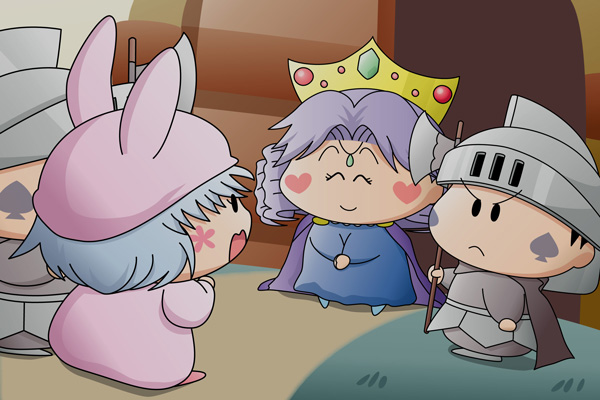

家に帰ってもパピィはムルモのことで頭がいっぱいで、じっとしていることすらできません。
そして気がつけばムルモの住むお城へと向かっていました。
すっかり夜はふけていて、いつもならパピィやムルモもとっくに眠っている時間です。
パピィ「お願いだからムルモに会わせて欲ちいの。
どうちても会ってムルモとお話をちたいの！」
兵士「許可が下りていないからだめだだめだ。
それにもうこんな時間だぞ」
パピィ「あたちはムルモの友達なのよ。
ちょっとぐらいいいじゃない！」
兵士「ちょっとでもだめなものはだめだ。
言うことを聞きなさい！」
パピィ「大丈夫よ！
もう…早くムルモに会わせてよ！！」
全然あきらめようとしないパピィを相手に、兵士たちは困った顔をしています。
するとお城の扉が開き、奥からサリア王妃が現れました。

サリア「今日はもうムルモはお休みになりましたわ。
また明日遊びにきてくださいね」
パピィ「うん…」
サリア「先ほどムルモにもパピィさんがたずねてきたことを伝えたのですが、
ムルモはあなたのことを知らないと言って会おうとしないのですよ。
何かあったのかしら？」
パピィ「え・・・な、何でもないわ。
全然気にしなくて大丈夫よ。
じゃああたちは帰ります」
サリア「気をつけてお帰りくださいね」
長い一日がやっと終わりました。今回の絵は夜の９時過ぎのお城の前という設定ですが、とても大きな月が光を放つミルモの里は夜でも明るいので、もう少し明るい絵にすればよかったかなと後悔。遠近感もちょっと微妙かも(^^;。
ストーリーはこれで終わりではなく、パピィにはもっともっと活躍していただきます(^^)。
(2006/5/11)